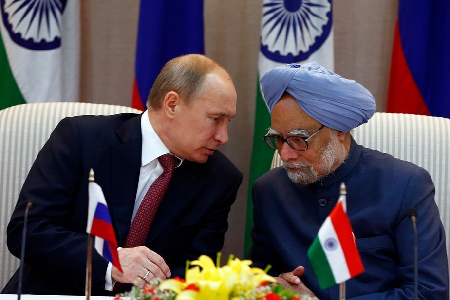
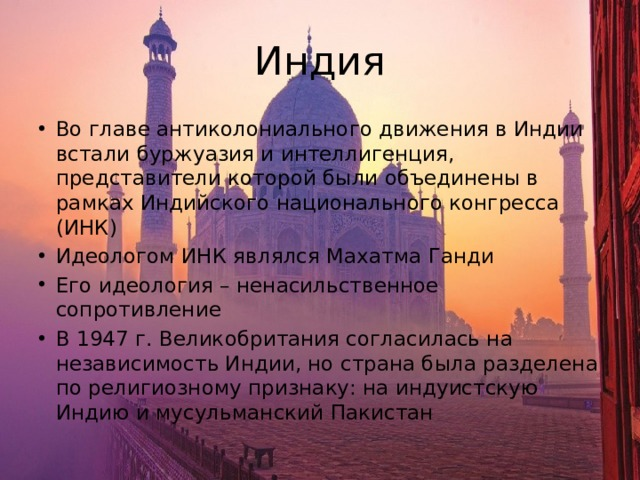

Внешняя политика Индии
Основные принципы:
- Политика неприсоединения
- Мирное сосуществование
- Дружба со всеми странами
- Акцент на отношения с соседями

Кратко о главном:
Индия проводит независимую внешнюю политику. Страна дружит и с Россией, и с США.
Индия выступает за многополярный мир и реформу ООН.
Главная цель — развитие и безопасность страны.
Ключевые направления:

- Act East Policy (акцент на Азию)
- Сотрудничество с БРИКС и ШОС
- Отношения с соседями (Непал, Бутан, Бангладеш)